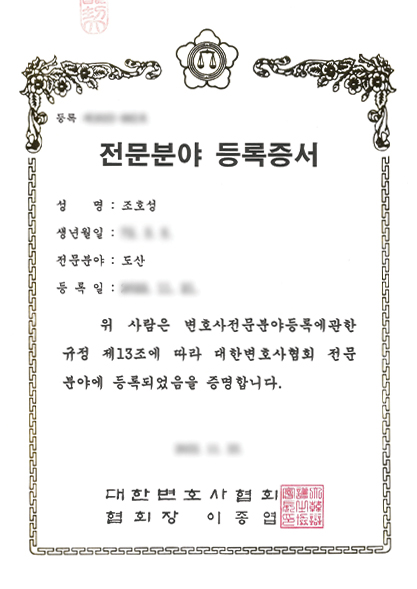

끝없는
독촉 전화
아침부터 밤까지 울리는 채권자 전화,
번호를 바꿔도 소용없습니다.
합법적인 채무 조정으로
최대 90% 탕감받고 다시 시작하세요.
대한민국에서 매년 10만 명 이상이
같은 고통을 겪고 있습니다.
당신만의 문제가 아닙니다.
아침부터 밤까지 울리는 채권자 전화,
번호를 바꿔도 소용없습니다.
혼자 감당하기엔 너무 무거운 짐,
수치스럽고 외롭습니다.
원금은 줄지 않고 이자만 쌓여,
출구가 보이지 않습니다.
통장이 막히고 급여가 압류될까
매일 두렵습니다.
법원이 인정한 합법적 채무조정으로
이렇게 달라집니다.
아래 조건에 해당한다면
개인회생 신청이 가능합니다.
복잡해 보이는 절차,
정감이 단계마다 함께합니다.
전화 또는 온라인으로 5분 내 개인회생 자격 여부를 확인합니다.
전담 담당자가 서류 준비부터 법원 신청까지 처음부터 끝까지 돕습니다.
신청 즉시 금지명령으로 모든 독촉·압류가 법적으로 중단됩니다.
법원이 승인한 변제 계획에 따라 감액된 금액을 분할 납부합니다.
3~5년 변제 후 남은 채무가 전액 소멸되고 새 출발을 시작합니다.
대표변호사 서용구
의뢰인 한 분 한 분의 채무 상황을
정확히 진단하고,
꼭 필요한 절차만
정직하게 권해 드립니다.
빚의 끝에서 다시 시작하실 수 있도록,
상담부터 면책까지 끝까지 함께하겠습니다.
대한변호사협회에 등록된 도산전문변호사가
개인회생·개인파산 사건을 직접 검토하고
의뢰인의 상황에 맞는 해결책을 제시합니다.

수많은 사건이
증명하는 결과
개인회생·개인파산 인가 및 면책 사례를
바탕으로 의뢰인의 새로운 출발을
함께 만들어갑니다.
법무법인 정감과 함께 새 출발을 시작한 분들의 실제 이야기입니다.
3년 동안 이자만 갚다 지쳤었는데, 상담 후 3개월 만에 인가 결정을 받았습니다. 이제 독촉 전화가 없어서 너무 편합니다.
사업 실패로 빚이 쌓였는데, 가족에게 알리지 않고 진행할 수 있었습니다. 담당자분이 처음부터 끝까지 친절하게 도와주셨어요.
프리랜서라서 안 된다고 생각했는데 가능하더라고요. 지금은 월 변제금이 기존 이자보다 훨씬 적어서 생활이 안정됐습니다.
상담을 진행하신 분들이
보내주신 신뢰와 만족도
개인회생·파산 분야에
집중해 온 전문 경력
지금까지 정감과 함께한
누적 채무조정 사건
언제든 접수 가능한
상담 창구 운영
개인회생은 신용정보에만 등록되며, 직장이나 가족에게 별도로 통보되지 않습니다. 철저한 비밀이 보장됩니다.
네, 가능합니다. 프리랜서·아르바이트·일용직 등 비정규 소득도 인정됩니다. 소득 증빙 방법은 상담 시 안내해 드립니다.
개인회생 신청과 동시에 금지명령을 신청할 수 있으며, 법원이 인용하면 모든 채권자의 독촉과 압류가 즉시 중단됩니다.
초기 상담은 완전 무료입니다. 진행 비용은 상담 후 채무 규모와 상황에 따라 안내해 드리며, 분할 납부도 가능합니다.
네, 금융채무불이행자(신용불량) 상태여도 신청이 가능합니다. 오히려 개인회생이 신용 회복의 첫걸음이 됩니다.
작은 고민도 괜찮습니다.
정보를 남겨주시면 담당 변호사가
직접 연락드립니다.